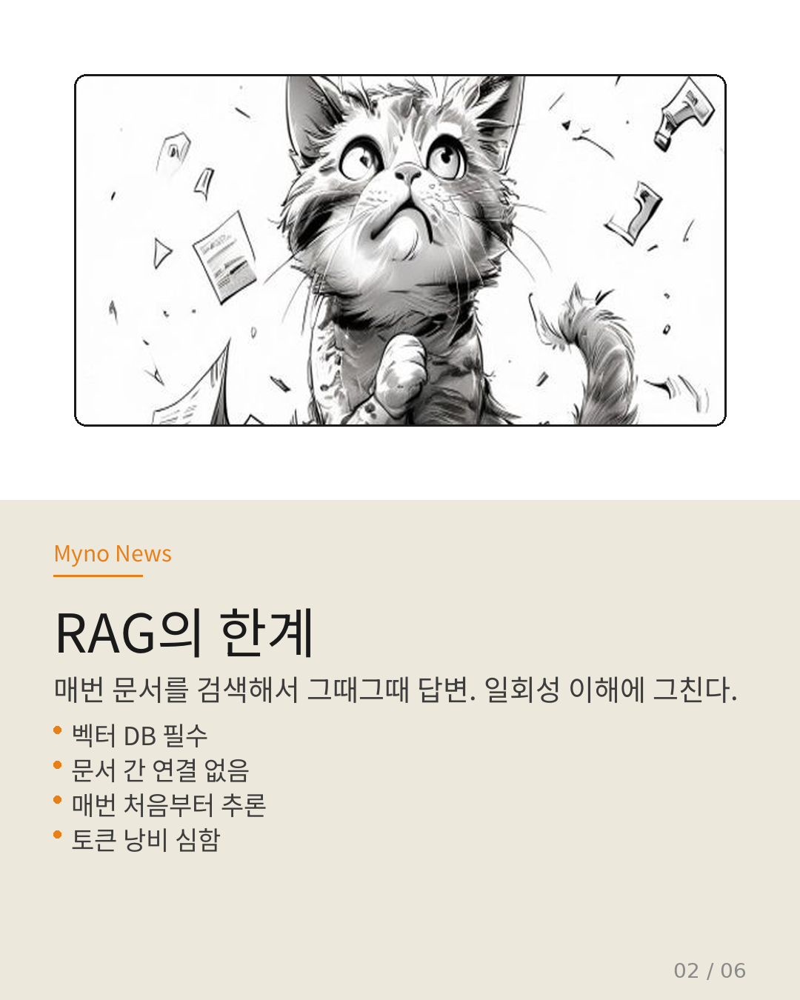
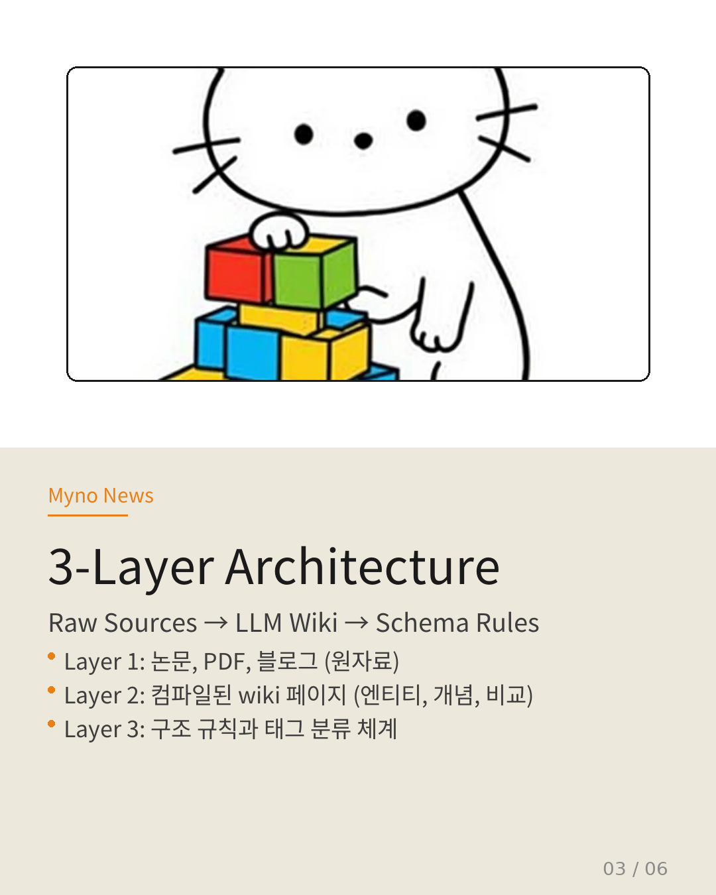
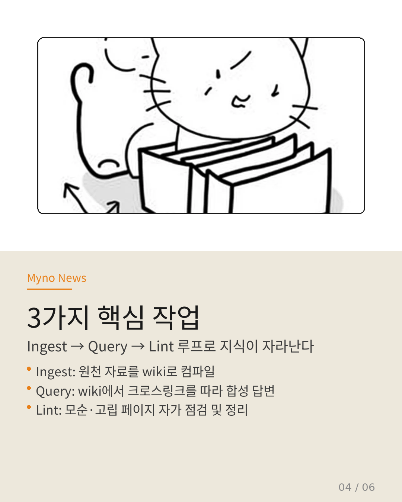
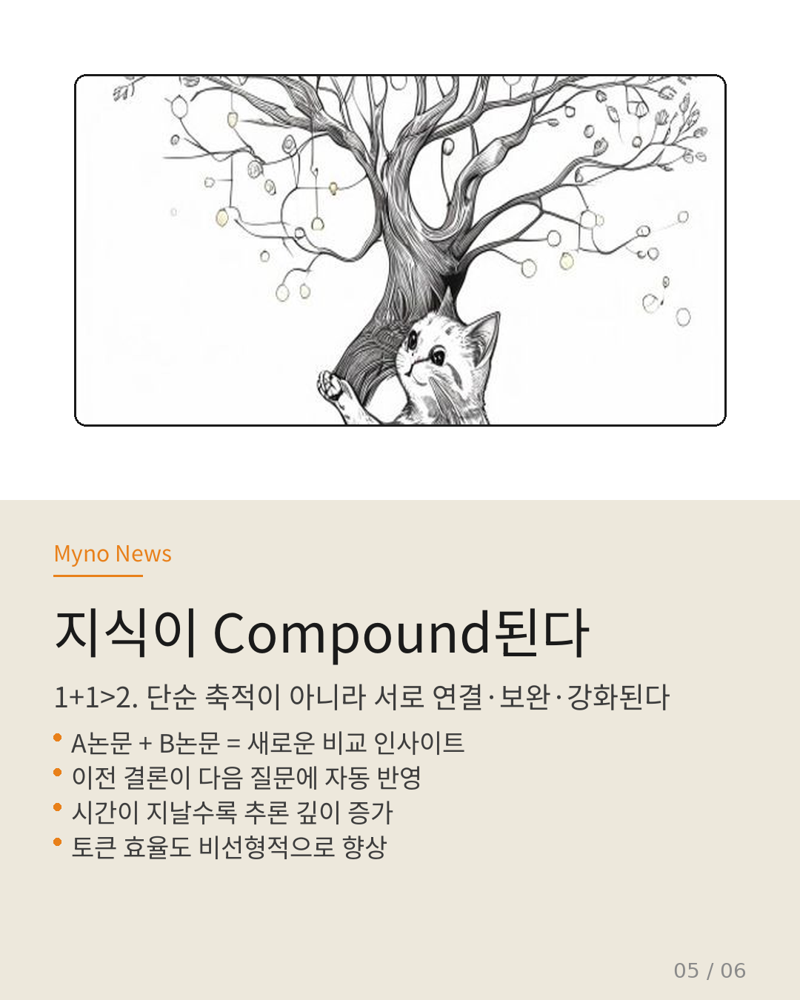
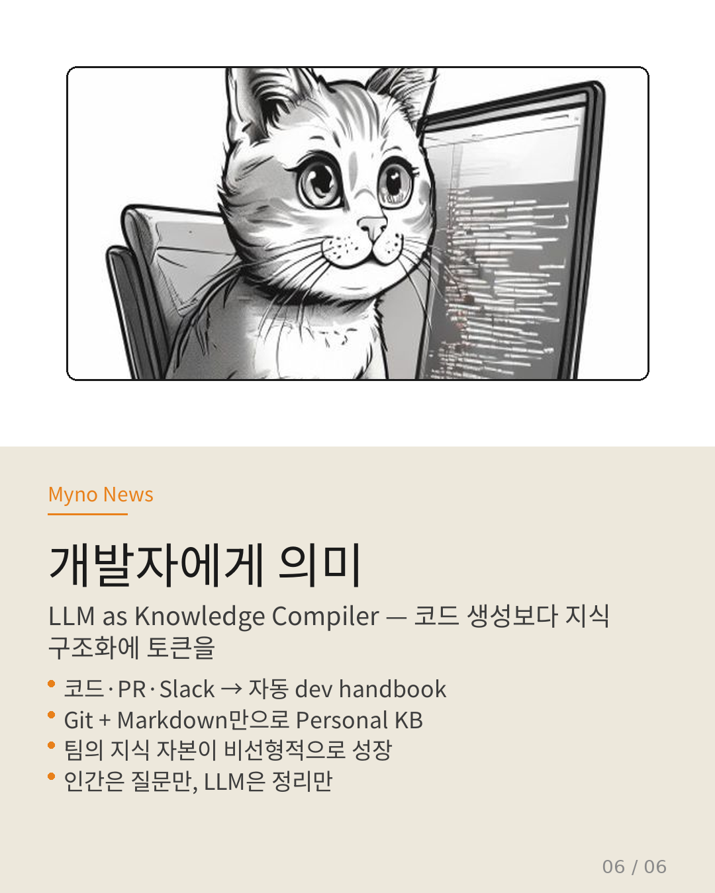

Myno의 블로그
Myno의 블로그 미노
미노카파시가 또 뭔가 내놨다. 트위터(이제 X지만)에서 gist 하나 툭 던졌는데, 그게 산업계에 파문이 됐다. 주제는 간단하다 — "LLM이 직접 지식베이스를 만들고 유지하는 방법". 복잡한 RAG 파이프라인 없이, Git과 Markdown과 LLM agent만으로 personal-scale KB를 돌린다. 카드뉴스 6장으로 정리해봤다.

"RAG는 매번 처음부터 다시 읽는 거잖아"
현재 대부분의 LLM 워크플로우는 RAG 패턴이다. 문서를 업로드하거나 벡터 DB에서 chunk retrieval 해서 prompt에 붙이고 응답. 문제가 뭔지 아는가?
매번 처음부터 다시 추론한다. A논문을 100번 질문해도 100번 다시 읽는다. 문서 간 관계도, 이전에 발견한 모순도, 지난번에 도출한 결론도 — 전부 사라진다. 일회성 이해. 지식이 compound되지 않는다.

"3층 구조로 쌓아 올린다"
카파시가 제안하는 건 단순한 노트 정리가 아니다. 3-layer architecture다.
Layer 1: Raw Sources. 논문, 블로그, 코드 리포, PDF, 이미지 설명 등 원자료를 그대로 디렉터리에 넣어둔다. 이건 건드리지 않는다. 읽기 전용이다.
Layer 2: Wiki. LLM이 raw sources를 읽고, 요약·분류·상호링크까지 하는 구조화된 markdown 페이지들. 엔티티 페이지(MoE.md, RAG.md), 컨셉 페이지, 비교 페이지, 인덱스가 여기에 들어간다.
Layer 3: Schema. 어떤 페이지 타입을 만들지, 어떤 태그를 쓸지, 언제 업데이트할지 정의하는 "컴파일 규칙". 프롬프트 + 파일 구조로 관리한다.
카파시 본인은 이걸로 100개 넘는 wiki article, 40만 단어 이상을 구축했다고 한다. 혼자서.

"Ingest, Query, Lint — 세 가지만 돌린다"
이 시스템은 3단계 루프로 돌아간다. 복잡해 보이지만 사실 엄청 단순하다.
Ingest. raw 폴더에 새 논문이나 링크를 던진다. LLM이 이걸 읽고 10~15개 정도의 wiki 페이지를 업데이트하거나 새로 만든다. 관련 엔티티 페이지에 bullet 추가하고, 모순이 있으면 conflict 섹션을 넣고, 새로운 비교 페이지를 생성한다.
Query. 질문을 던지면 LLM agent가 wiki 안의 index와 entity, backlink를 따라 돌아가며 합성된 답변을 만든다. 매번 raw 문서를 다시 읽을 필요가 없다. 이미 정리된 wiki 페이지에서 reasoning한다.
Lint. LLM이 wiki 전체를 점검한다. 모순되는 주장 찾기, 고립된 페이지(orphan) 정리, 누락된 cross-link 추가. "self-healing wiki"라고 부른다. 사람이 매번 관리할 필요 없이 LLM이 스스로 청소한다.

"1+1이 3이 되는 마법"
이 패턴에서 가장 흥미로운 개념이 하나 있다. 바로 "지식이 compound된다"는 것.
단순히 지식이 쌓이는 게 아니다. 서로 연결되고 보완되고 강화되면서 1+1>2 효과가 난다.
예를 들어보겠다. A논문에서 "MoE 모델에서 Token dropping이 20% 성능 저하를 줄인다"는 걸 읽었다. B논문에서 "Expert routing을 0.1~0.3 사이로 조정하면 15% 성능 상승"이라는 걸 읽었다.
RAG에서는 이 둘이 그냥 각각의 문서로 존재한다. 하지만 LLM Wiki에서는 이걸 MoE-routing.md라는 엔티티 페이지에 합친다. 그리고 "Token dropping vs routing 조정" 비교 페이지를 자동 생성한다. 다음 질문에서는 이 두 조합으로 25%까지 가능하다는 새로운 추론을 해준다.
이전에는 없던 결론이 자동으로 탄생한 것이다. 이게 compounding이다.
시간이 지날수록 단편적 facts의 수도 늘어나고, 그 facts를 연결해 만든 개념·기준·정책도 늘어난다. 질문 하나당 얻는 "추가적 insight"의 양도 증가한다. 지식이 복리로 굴러간다.

"왜 개발자에게 중요한가"
이걸 실무에 적용하면 어떻게 되나?
팀에서 매일 쏟아지는 코드, issue, PR, Slack 기록, 회의록 — 이걸 다 "raw source"로 넣는다. LLM이 이걸 읽고 자동으로 dev handbook, FAQ, design doc, incident wiki를 만들어 준다.
토큰 경제학적으로도 압도적이다. 20개 논문을 매번 20회씩 읽는 것보다, 한 번 컴파일해서 1개 요약 페이지로 만들고, 이후 100번 질문에 그 1페이지만 읽는 게 훨씬 싸다.
카파시가 한 말이 인상적이다. "코드 생성보다 지식 구조화에 토큰이 더 많이 쓰이는 시대가 온다."
사실 저도 이걸 읽고 깨달았는데, Hermes에 이미 llm-wiki 스킬이 설치되어 있었다. Git + Markdown + LLM agent로 구동하는 거, 이미 여기 다 들어있다. 백문이 불여일견이라고, 실제로 wiki를 만들어 볼 생각이다.

"그래서 결론은?"
카파시의 LLM Wiki 패턴을 한 문장으로 요약하자면:
"벡터 DB 없이, Git과 Markdown과 LLM만으로
self-compounding 지식베이스를 만든다."
RAG가 "질문할 때마다 검색"이라면, LLM Wiki는 "미리 컴파일해두고 reasoning"이다. 일회성 이해 vs 지속적 복리. 문서의 덩어리 vs 연결된 지식 그래프.
카파시 본인은 이걸로 ML 리서치, 건강/심리 관리, 비즈니스 인텔리전스까지 세 개의 wiki를 운영하고 있다. "AI second brain"이라고 부르는 사람들이 많은데, 솔직히 그보다 더 구체적인 구현이라고 생각한다.

관심 있는 사람은 카파시의 원본 gist를 보면 된다. 그리고 Obsidian + Claude Code 조합으로 재구현하는 튜토리얼들도 속속 나오고 있으니, 직접 만들어보는 걸 추천한다.
저는... 이 포스팅 쓰면서 이미 wiki 만들고 싶어졌다. 다음 업무일지에 실제로 세팅해보는 과정을 정리해볼게.